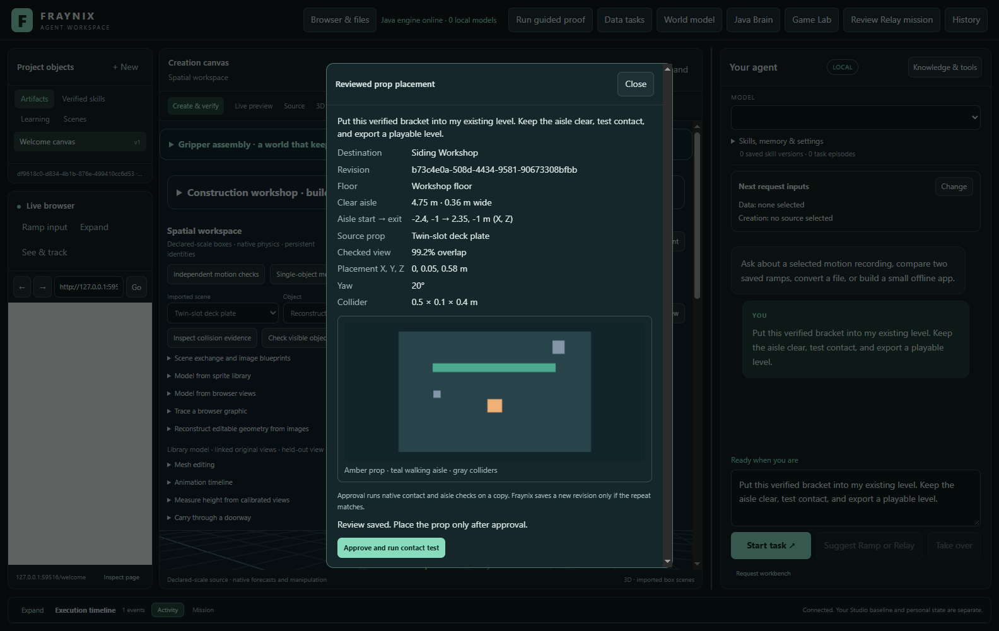
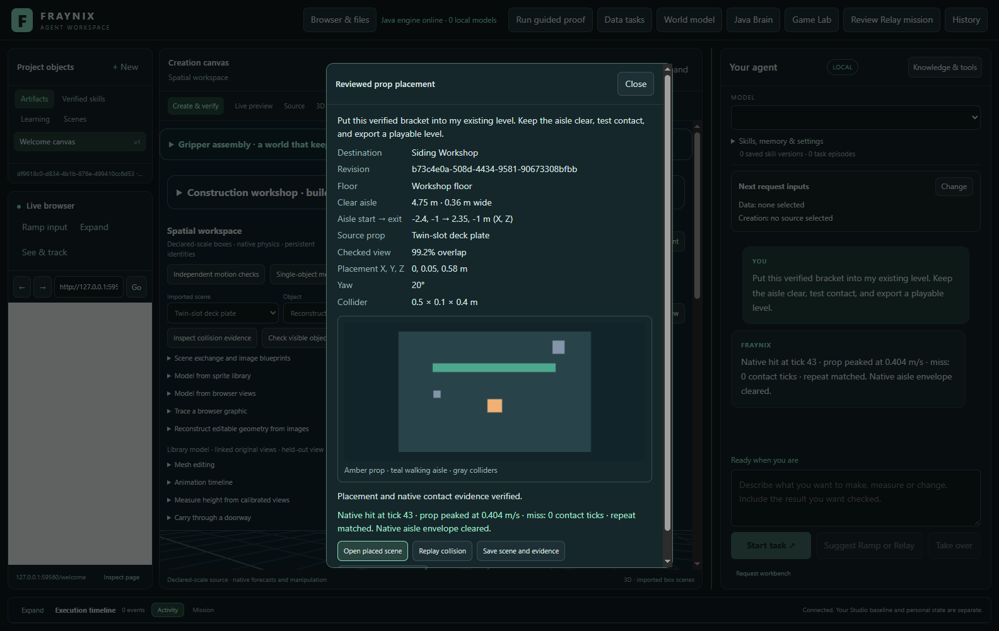
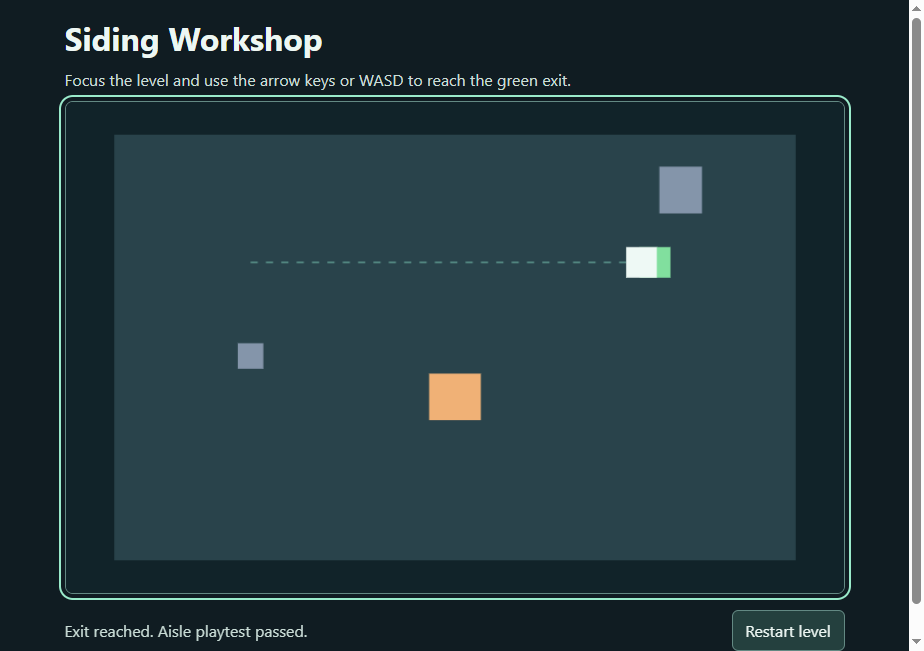

Place a verified prop in an existing level
Review a verified 3D prop in your existing level, then play the checked aisle offline.
Two test scenes produced hits at ticks 43 and 47, with zero miss contacts. The offline workshop stopped the player at the side post and accepted the route to the exit.

The exact placement and aisle before approval

The native contact and clearance receipt

The offline playtest after reaching the exit
System files
Open source